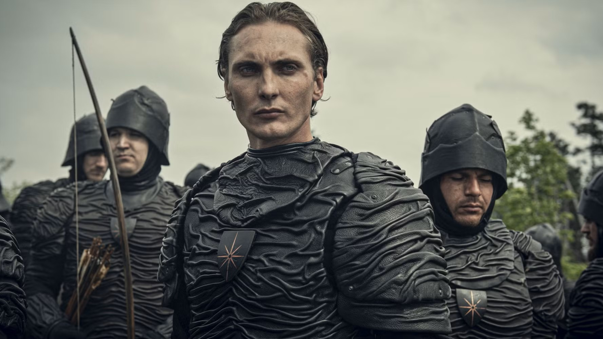
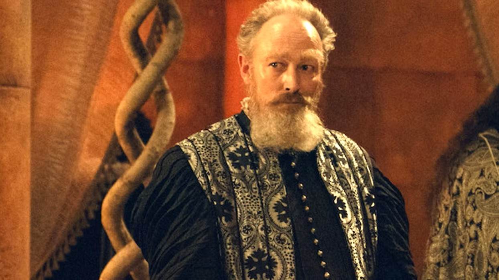
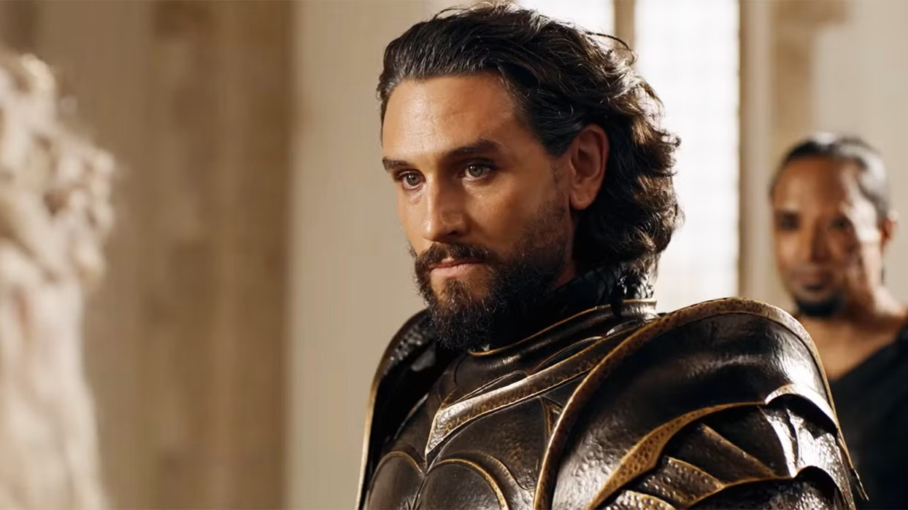
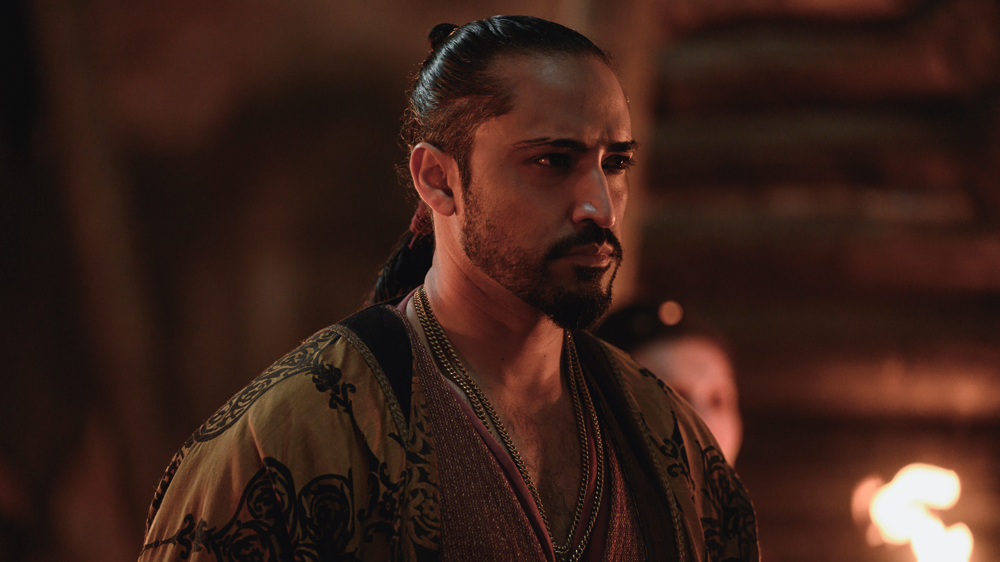

Cahir Mawr Dyffryn Aep Ceallach
Cahir Mawr Dyffryn Aep Ceallach is a Nilfgaardian Intelligence Officer, a good swordsman, and he is the main villain of season 1.
Cahir Mawr Dyffryn Aep Ceallach is a Nilfgaardian Intelligence Officer, a good swordsman, and he is the main villain of season 1.

Stregobor is a Korivian Mage, he is one of the most powerful characters of the show, and his area of expertise is illusions.

Emhyr Var Emreis is the Emperor of Nildgaard and Ciri's father. He does not possess magic, but he is the most influential person on the Continent. He inspires loyalty to his followers and fear to his enemies.

Vilgefortz Of Roggeveen is also a Korivian Mage and the main antagonist in season 3. He matches the intelligence and manipulation of Emhyr, and is also the most powerful mage ever.
